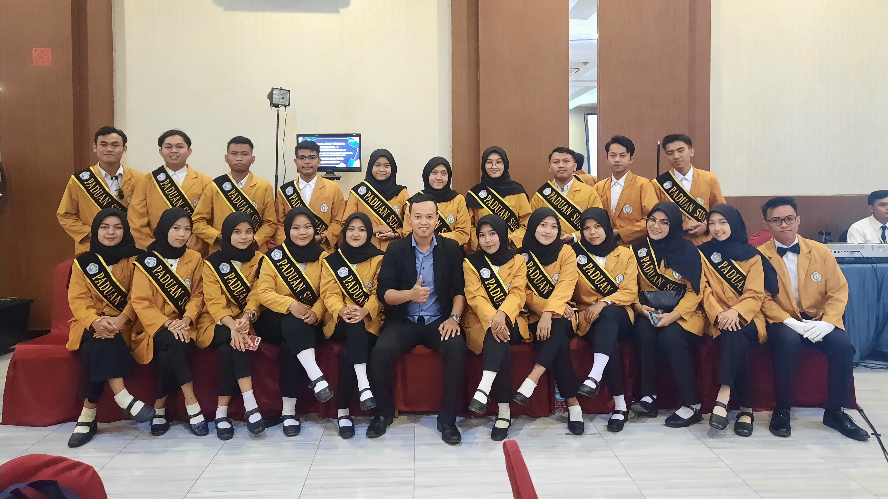

Paduan Suara
Organisasi paduan suara atau kor merupakan istilah yang merujuk kepada ansambel musik yang terdiri atas penyanyi-penyanyi maupun musik yang dibawakan oleh ensembel tersebut. Umumnya suatu kelompak paduan suara membawakan musik paduan suara yang terdiri atas beberapa bagian suara.
Paduan Suara Mahasiswa Politeknik Baja Tegal merupakan paduan suara yang diperuntukan khusus bagi mahasiswa dan mahasiswi yang menuntut ilmu di Politeknik Baja Tegal. Beralamat di Dukuhwaru, Jl. Raya Dukuhwaru, Keplik, Dukuhwaru, Kec. Dukuhwaru, Kabupaten Tegal, Jawa Tengah, Indonesia.
Visi
Visi UKM Paduan Suara Mahasiswa Politeknik Baja Tegal adalah menjadi tempat/wadah yang berkualitas bagi mahasiswa UMK dalam mengembangkan kemampuan bernyanyi khususnya dalam bentuk paduan suara. Yang artinya siapapun yang menjadi anggota dari UKM Paduan Suara Mahasiswa Politeknik Baja Tegal ini bisa memberikan dampak yang positif bagi sekitarnya.